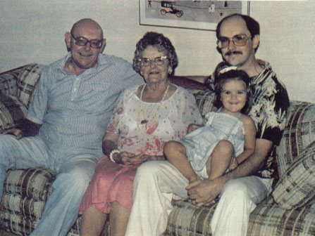

| Kathryn France Phalen, who went by Kate, was born in Syracuse, NY on January 17th, 1901. She was one among six children of Perry and Maggie Phalen. She married Robert Craig and together they had 4 children. Robert died in 1939. Kate got remarried in 1951, to Al Hemming in Syracuse, NY. Her son Bob died in 1981. Kate finally passed on August 7th, 1991 at the ripe old age of 90. |
 Bob (her son), Kate, Joel (her grandson), & Cara (her great-grandaughter) |